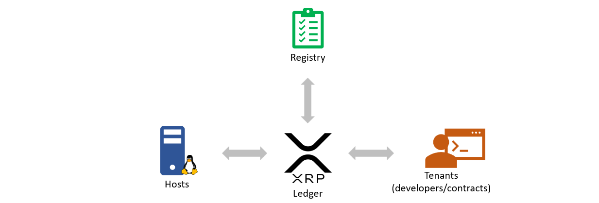

Evernode
Evernode is a decentralized marketplace for hosting smart contracts. Evernode brings several decentralized technology innovations together to provide a global network of severs which is capable of hosting smart contracts. It consists of Hosts, which are Linux servers capable of hosting smart contracts; Registry, which maintains a directory of participating hosts; and Tenants who purchase server space from Hosts in order to run smart contracts. The interactions and the financial activities between these parties are facilitated by the XRP Ledger.

Native currency
Evernode uses Evers (EVR) as its native currency for all financial transactions in the marketplace. Evers are tokens issued on the XRP Ledger with a guaranteed finite supply. Hosts make their registration deposit in Evers and price their server space in Evers. Tenants can lease hosting using Evers.
Initially, all Evers will be airdropped into the community to ensure a circulating supply of Evers for registration and hosting fees. The largest airdrop will go to the Evernode Foundation. The Evernode Foundation will use most of its Evers to purchase hosting services from registered hosts through the Anchor tenant procurement program to host the Community Contract. In this way, the Evernode Foundation acts as an “anchor tenant” for the Evernode network, guaranteeing early adopters a steady income (in Evers) for making their server space available on Evernode. See Evers.
Moment
Tenants pay for hosting per "Moment". A moment is the shortest duration for which a smart contract instance can pay for hosting. Moments are calculated using "XRPL ledgers elapsed". Currently, a Moment is defined as 900 XRPL ledgers which is close to 1 hour in real world time.
Further reading
Evernode news
- @EvernodeXRPL on Twitter
- Evernode website